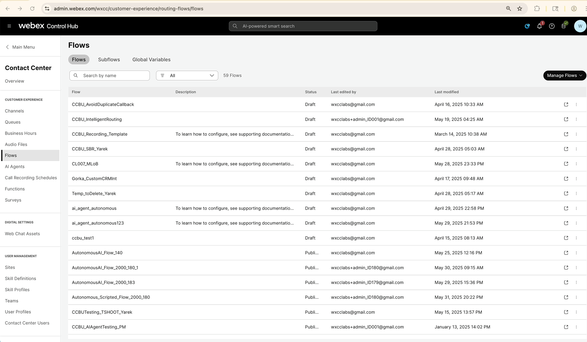
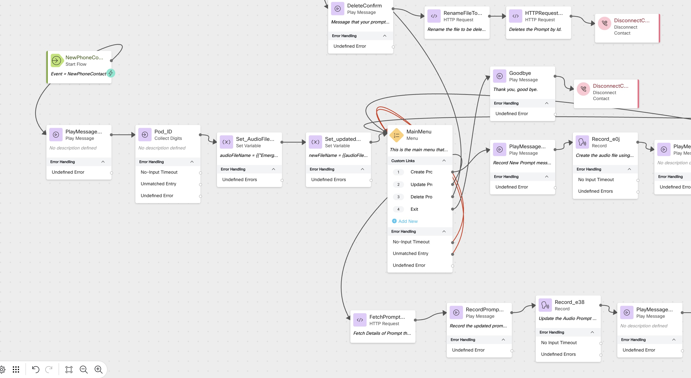

Dynamically Controlling Emergency Audio in Webex Contact Center Using API
Story
In this lab, you will learn how to dynamically record or update an Emergency prompt in Webex Contact Center (WxCC). This is especially useful during emergency scenarios where a Supervisor or Administrator needs to record a new message or update an existing one in real-time. For instance, during a sudden outage or a weather-related closure.
Note
The flow also includes an option to delete an audio file. However, it is strongly recommended not to delete any prompts during this lab. The delete option is provided for completeness and for those looking to reuse the same flow in a production environment.
High-Level Explanation
A call enters the Emergency Message Recording flow.
Initial nodes dynamically create an audio file name in the format: Emergency_
The caller is presented with a menu that offers three options:
Record a new emergency prompt
Update an existing emergency prompt
Delete an existing prompt (Use with caution)
Based on the selected option, the flow uses the Webex Contact Center Audio File APIs (via Connector) to:
Record: Allow the caller to record a new prompt.
Update: Replace the existing prompt with a new recording.
Delete: Remove the prompt (optional; not recommended during this lab).
The newly recorded prompt is stored using the generated file name and can be used later in other flows for emergency call handling.
Preconfigured Elements
We will importing flow from a Flow Template.
A Connector configured to call Webex Contact Center Audio File APIs (upload, update, delete).
All the Local Variables required for the flow are preconfigured and available when you import the template.
Select a Flow Template
Under Flow > Manage Flows > Create Flows, select Flow Template
Select "Audio Prompt Recording and Management"
Click View Details
Click Select Template
Click Next
Rename the flow
CL _emeraudio Click Create Flow and confirm that the flow loads in the Flow Canvas
Under Flow > Manage Flows > Create Flows, select Flow Template
Select "Audio Prompt Recording and Management"
Click View Details
Click Select Template
Click Next
Rename the flow
CL _emeraudio Click Create Flow and confirm that the flow loads in the Flow Canvas
Show Me

Show Me
{kind=link}

Add a Play Message node
Editthe flowActivity Label:
Play_wlc Enable Text-To-Speech
Select the Connector: Cisco Cloud Text-to-Speech
Click the Add Text-to-Speech Message button
Delete the Selection for Audio File
Text-to-Speech Message:
Welcome to Cisco Live, Let's set the name of the Emergency file, before we play with updating the same. Delete the existing path from New Contact node and connect it to the play message node
Add a Collect Digits node
Activity Label:
Pod_ID Connect the Play message output node edge to Collect Digit node
Enable Text-To-Speech
Select the Connector: Cisco Cloud Text-to-Speech
Click the Add Text-to-Speech Message button
Delete the Selection for Audio File
Text-to-Speech Message:
Please enter your 3 digit pod id
Add a Set Variable node
Connect the Collect Digit Node edge to Set Variable node
Activity Label:
Set_AudioFileName Variable:
audioFileName Select Set Value
Value
{{"Emergency_" ~ Pod_ID.DigitsEntered ~ ".wav"}}
Add an another Set Variable node
Connect the Set Variable Node edge to this Set Variable node
Activity Label:
Set_updatedFile Variable:
newFileName Select Set Variable
and select preconfigured
audioFileNamefrom the drop downConnect the this Set Variable Node to Menu Node
Check your flow

Check your flow
{kind=link}

Publish your flow
Turn on Validation at the bottom right corner of the flow builder
If there are no Flow Errors, Click Publish
Add a publish note
Add Version Label(s): Live
Click Publish Flow
Map your flow to your inbound channel
Navigate to Control Hub > Contact Center > Channels
Locate your Inbound Channel (you can use the search):
Select the Routing Flow:
CL _emeraudio Select the Version Label: Live
Click Save in the lower right corner of the screen
Testing the Flow
Call into the flow. You will be greeted and asked to enter your Pod ID.
Upon entering the Pod ID, a variable will be dynamically created in the format: Emergency_
.wav``` A menu will then be offered with the following options:
1 to create a new prompt
2 to update an existing prompt
3 to delete an existing prompt ( please do not perform this option during the lab)
To create a new prompt:
Select Option 1 from the menu.
Record the prompt after the beep, then press # to finish.
Go to Control Hub → Contact Center → Audio Files.
Sort the list by Date Created and verify that a new prompt has been created.
You can download and play the prompt to confirm the recording.
To update an existing prompt:
Select Option 2 from the menu.
Record the new message after the beep, then press # to finish.
Go to Control Hub → Contact Center → Audio Files.
Sort the list by Date Modified and verify that the prompt has been updated.
Download and play it to confirm the new message is applied.
This test demonstrates how supervisors or admins can manage emergency Audio prompts dynamically in real-time using the IVR flow integrated with Webex Contact Center APIs.
Debugging the Flow
Open the Debugger in the Flow Builder
Select the last interaction from the top of the list
Trace the call steps
You can view the path, input/output variables, and events Open the Debugger in the Flow Builder
Select the last interaction from the top of the list
Trace the call steps
You can view the path, input/output variables, and events